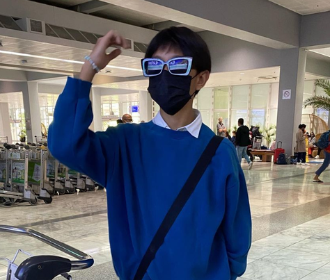

JINO BABOL
ABOUT ME
PERSONAL BACKGROUND
My full name is Jino Samuel E Babol. I am 14 years old and I was born in Davao City, Philippines, on November 20 2008. From preschool all the way to the end of Grade
School (Grade 6) I studied at AdDU (Ateneo de Davao University). After Grade school I entered the PSHSS (Philippine Science High School System). I am currently a PSHS
scholar, where I continue to study and pursue a career.
FACTS ABOUT ME
-Currently a badminton varsity player in the philippine science highschool, Southern Mindanao Campus.
-Currently a competetive minecraft bedwars player and traditional artist (usually using an anime art style).
-Consistent honor student in AdDU (Ateneo de Davao University) grade school.
-A Sports ALA/Club member and merch designer.
OTHER DETAILS
-Interested in joining a medical course in college, to pursue a medical career.
-Currently training under coach Reynald Quiben for badminton and kuya Jayrad Adeva for Volleyball,
-I enjoy eating vegetables (especially goicon and kimchi), but I hate fish.
-Interested in training more in badminton. for competitive meets.